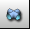

Content of this section:

 cfdmsh 4.0 documentation
cfdmsh 4.0 documentation cfdmsh 4.0 documentation


Content of this section:
File > New
Click on  in the toolbar

[Ctrl] + [T] → Select the "cfdmsh.py" file on your computer
In the Python console, type:
ImportCSVFile( "naca_4508.csv" )
or:
icf( "naca_4508.csv" )
Click on  in the 3D window toolbar
in the 3D window toolbar
Click on  in the 3D window toolbar
in the 3D window toolbar
Select "VertexesFromCSVFile_1" → Type in the Python console:
MakeFoilFromUnsortedVertexes( )
or:
mffuv( )
New Entity > Basic > Point → Apply and Close
Select "FoilFromUnsortedVertexes_1" → Operations > Partition →
Set "Tool Objects" to "Vertex_1" → Apply and Close
Select "Partition_1" → Type in the Python console:
MakeFoilTrailingFillets( 1e-3 )
or:
mftf( 1e-3 )
Select "FoilWithTrailingFillet_1" → New Entity > Build > Face → Apply and Close
Select "Face_1" → Right-click > Show Only
New Entity > Primitives > Disk → Set "Radius" to 20 → Apply and Close
Select "Disk_1" → Operations > Boolean > Cut →
Set "Tool Objects" to "Face_1" → Apply and Close
Select "Cut_1" → Right-click > Show Only
New Entity > Primitives > Rectangle → Set "Height" to 4 and "Width" to 3 → Apply and Close
Select "Face_2" → Operations > Transformation > Translation →
Set "Dx" to 1 → Apply and Close
Select "Cut_1" → Operations > Partition →
Set "Tool Objects" to "Translation_1" → Apply and Close
Select "Partition_2" → Right-click > Show Only
Right-click in the 3D window > Hide All
Select "Partition_2" → New Entity > Group > Create Group →
Select the  icon → Set the "Name" to "foil" →
icon → Set the "Name" to "foil" →
Select the foil edges in the 3D window →
Click on "Add" → Apply and Close
Select "Partition_2" → New Entity > Group > Create Group →
Select the  icon → Set the "Name" to "refined" →
icon → Set the "Name" to "refined" →
Select the refined face in the 3D window →
Click on "Add" → Apply and Close
The geometry is ready.
cfdmsh 4.0 documentation
tougeron-cfd.com © 2016